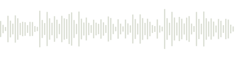

ARE · LISTENING STUDY 01
Listen for the heartbeat.
Side A is the original piano track. On Side B, the music slows and a heartbeat comes in.
Hear both sidesFROM MUSIC
TO A HEARTBEAT
TO A HEARTBEAT
A SOUND STUDY
BY YUXIN LIU
BY YUXIN LIU

A / ORIGINAL00:36
Slowpiano
Listen to the piano’s pace before turning to Side B.
00:00Ready when you are00:36
ALSO ON MY MIND
A few other things.
Different interests. Sometimes connected.
A notebook in progress.
YUXIN LIU / TENNYKO © 2026